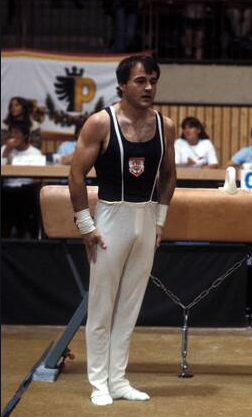

Volker Rohrwick (FRG)
1976 and 1984 Olympian
Four-Time World Championships Participant

Volker was born on July 16, 1954 in Westhofen.
Competition Results
1969
Jr. GBR-FRG Dual Meet: 1st Team, 4th AA
1975
Euro-Turnier International: 8th AA
European Championships: 9th AA
FRG Championships: 1st FX
HUN-FRG Dual Meet: 2nd Team, 5th AA
International Championships of Romania: 4th AA
1976
FRG Championships: 4th AA, 1st R, 1st V
FRG-SUI Dual Meet: 1st Team, 2nd AA
Olympic Games: 5th Team, 19th AA
Sihltahl Cup: 4th AA
1977
European Championships: 20th AA
FRG Championships: 3rd AA, 1st FX, 1st R, 1st V
Ontario Cup: 4th AA
Wiesbaden International: 4th AA
1978
Chunichi Cup: 8th AA
FRG Championships: 2nd AA, 1st FX, 1st R, 3rd PB, 3rd HB
World Championships: 5th Team, 17th AA
World Cup: 13th AA, 8th FX
1979
European Championships: 12th AA, 7th R
FRG Championships: 2nd AA, 1st PB
FRG-HUN-SUI Meet: 2nd Team, 6th AA
World Championships: 7th Team, 24th AA
World Cup: 13th AA, 5th R
1980
American Cup: 11th AA (prelims)
FRG Championships: 3rd AA, 1st R, 2nd FX, 2nd V, 3rd HB
International Mixed Pairs: 19th Team
USA-FRG Dual Meet: 2nd Team, 2nd AA
1981
FRG Championships: 1st AA, 1st FX, 1st R, 2nd V
World Championships: 6th Team
1982
Blume Memorial: 9th AA
Champions All: 6th AA
1983
FRG Championships: 3rd AA, 1st PB, 2nd FX, 2nd R
World Championships: 8th Team
1984
Olympic Games: 4th Team
This page was created on August 18, 2020.
© Gymn Forum